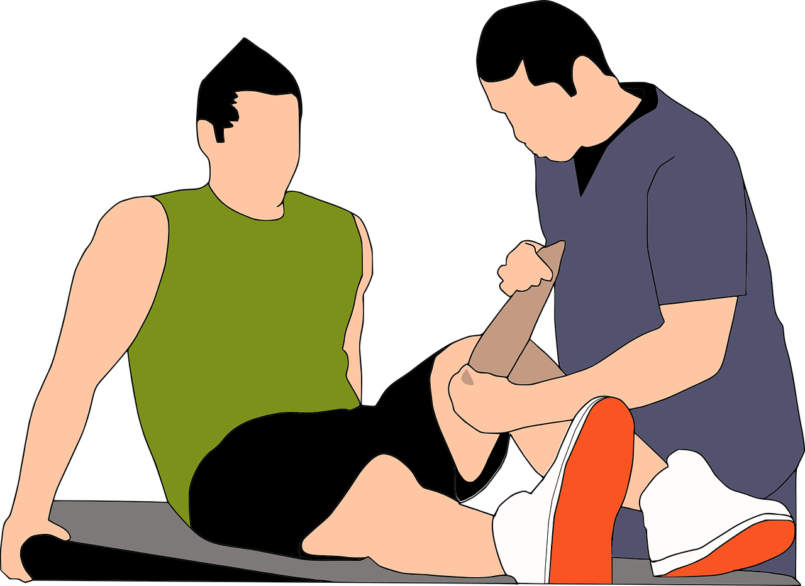
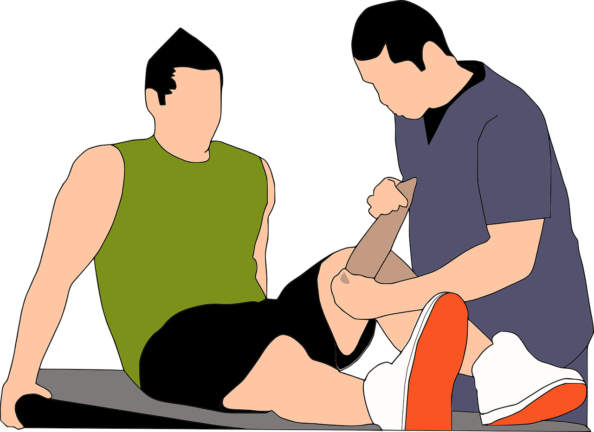

Physical Therapy the treatment of disease, injury, or deformity by physical methods such as massage, heat treatment, and exercise rather than by drugs or surgery. This program helps and teach our students how to become techniques and be ready for future jobs. Like most atheletes and people that have serious accidents have personal physical therapy technicians to help them get back the ablilities they could have lost.
Session 1: 1:00pm - 3:30pm
Session 2: 4:00pm - 6:30pm
In order to obtain the certification, our students must go through a multitude of networking and community service to prepare them for future careers and once our students obtain the certification we set them with interships so they can have a job after high school. Jobs our students could have are Physical therapy technician, physical therapy assistant, athletic trainer, physical therapist, may work in private clinics, hospitals, nursing homes, rehabilitation centers, home health care or orthopedic clinics.
This type of Physical Therapy manages with younger people that have problems performing activities that have injuries, pre-existing conditions and problems caused by illnesses or diseases.
This type of Physical Therapy is for older adults, it's purpose is to improve their balance and strength, build their confidence, and remaining active.
This type of Physical Therapy improve balance and reduce problems related to dizziness as well as people that have had a stroke and brain injuries.
Neurological Physical Therapy are people who specializes in the evaluation and treatment of individuals with movement problems due to disease or injury of the nervous system
This therapy focuses on the treatment or rehabilitation of injuries to the orthopedic system, which includes muscles, bones, joints, tendons, and ligaments
Cardiovascular therapy is devoted to helping patients improve cardiovascular health like heart conditions that include diseased vessels, structural problems, and blood clots, and/or lung health and Pulmonary helps patients increase awareness of their lungs in regards to performing activities